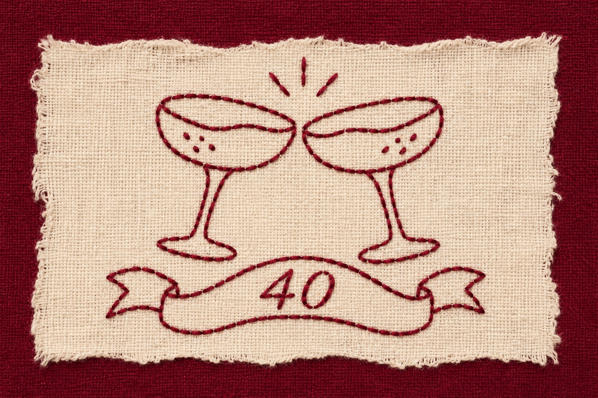
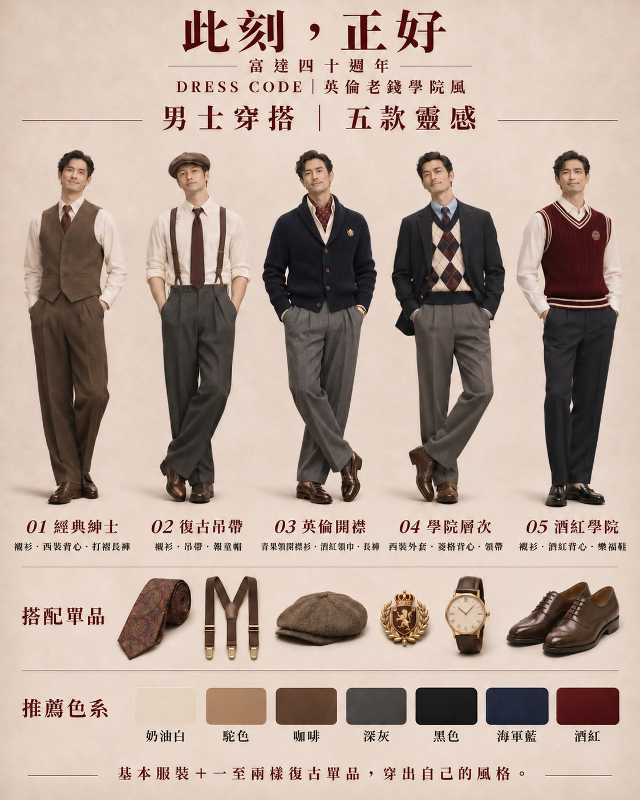
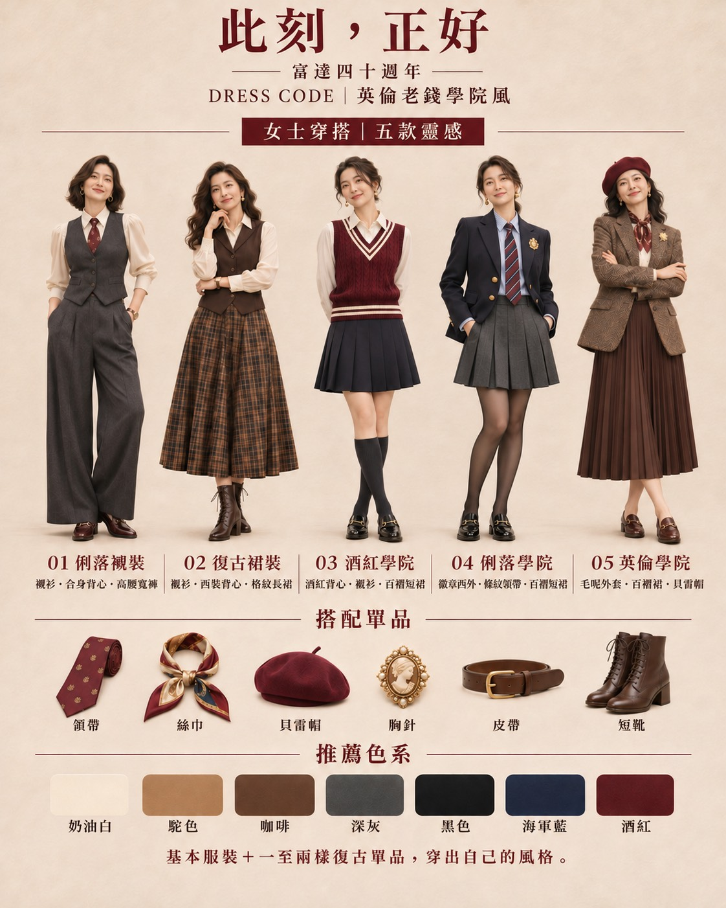

202701.08星期五 · 18:00 入席
Here's to us.
此刻相聚
把這個晚上，
留給我們。
四十年的故事，因為有你而更加豐富
我們從不同的時間出發，在富達相遇
此刻，相聚正好
讓我們為一起走過的日子舉杯
也為未來的每一段同行，舉杯
晚宴節奏
今晚的好時光
A lovely evening.
迎賓・相聚此刻
Welcome & Reception
開席・舉杯共聚
Dinner & Celebration
相聚有時・精彩待續
More Moments To Come
Dress code
英倫老錢學院風
一件背心、一條領帶，或一抹酒紅。
用一至兩樣復古單品，穿出自己的風格。
襯衫、西裝褲、格紋裙與百褶裙，搭配毛呢、細針織與皮革。
整潔、合身、方便走動，不需整套購買。
奶油白駝色咖啡深灰黑色海軍藍酒紅




避免運動套裝、破損牛仔褲與拖鞋。
今晚有型・
服裝風尚票選
盛裝出席・自由參加
每位同仁皆可參選，並投下心中的一票
期待今年的你
以喜歡的穿搭，一同慶祝40週年紀念
拍照場景，搶先偷看！
先看看當天的佈置，找找穿搭靈感，準備好你亮眼造型，就等你入鏡！